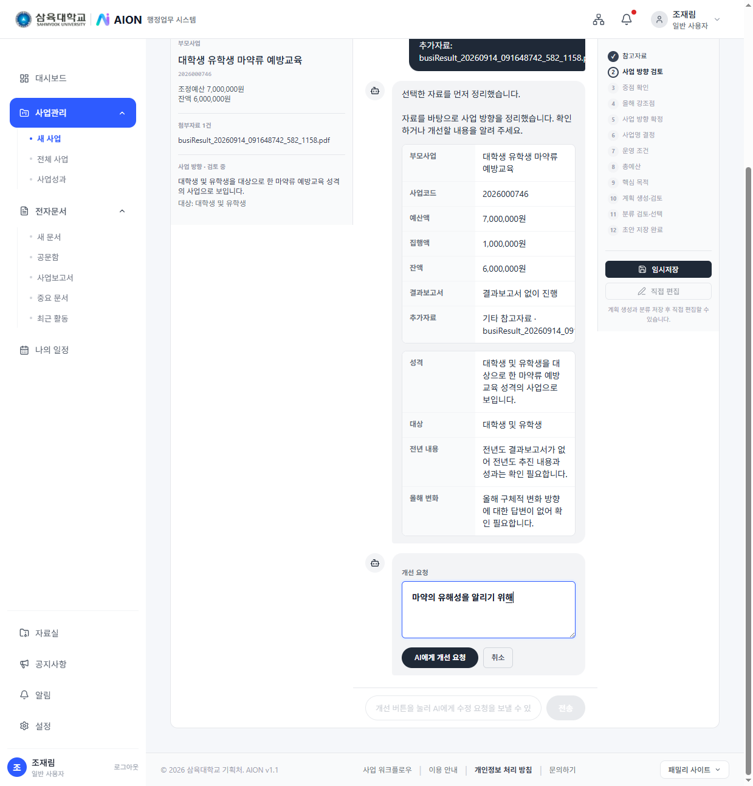
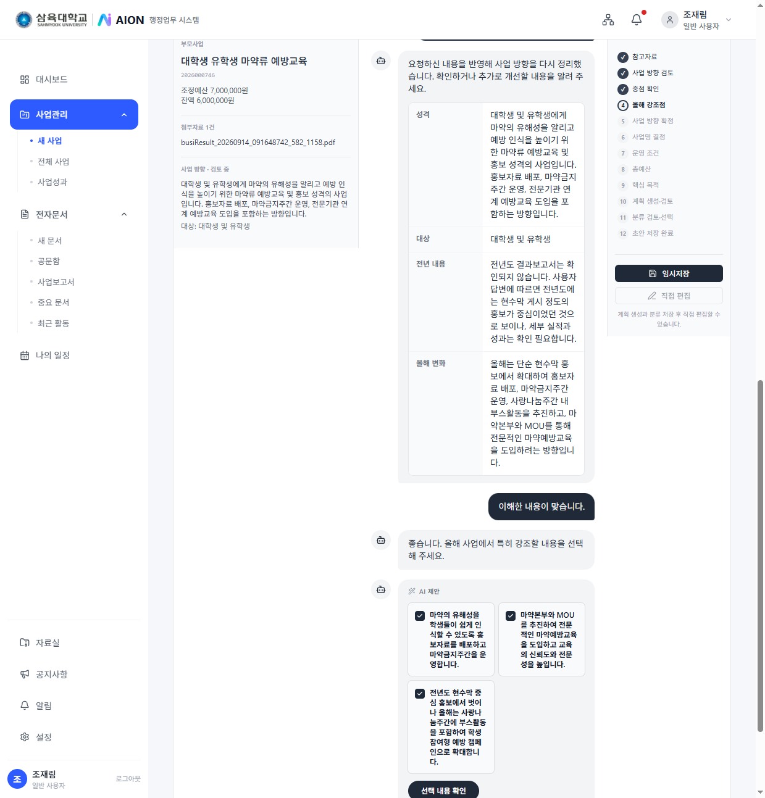
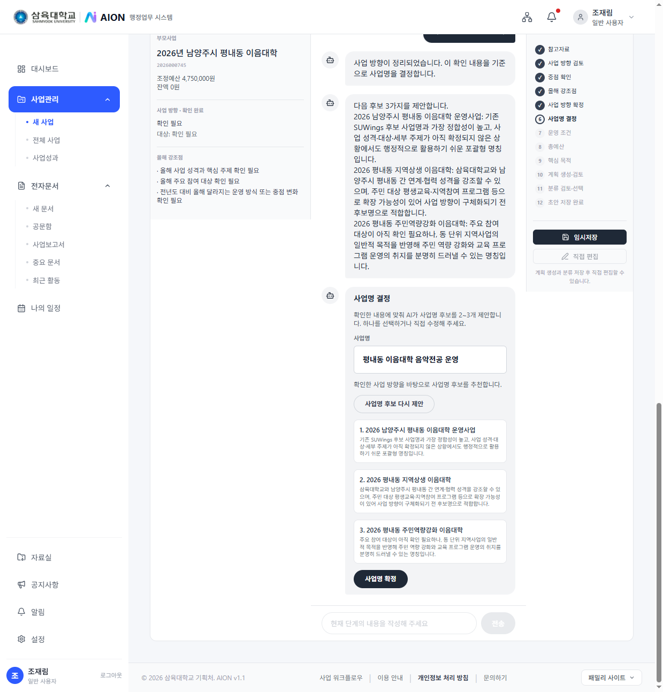
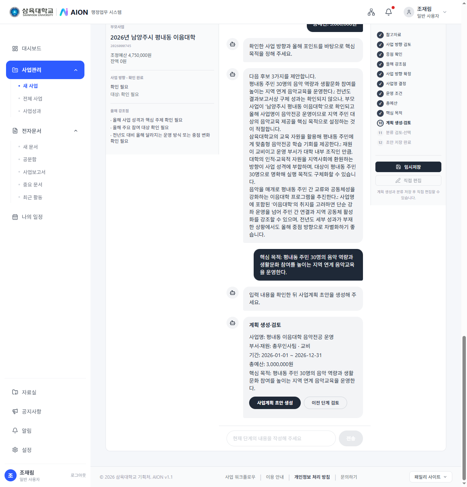
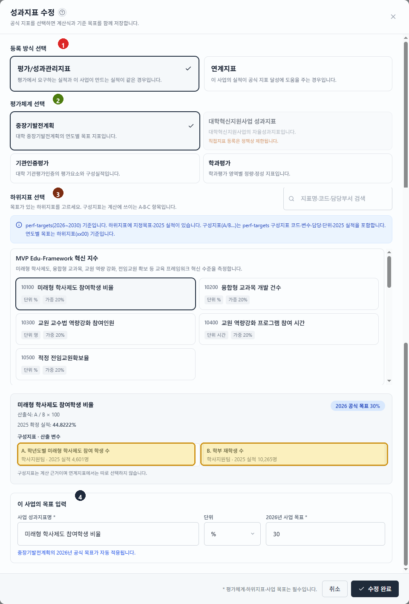
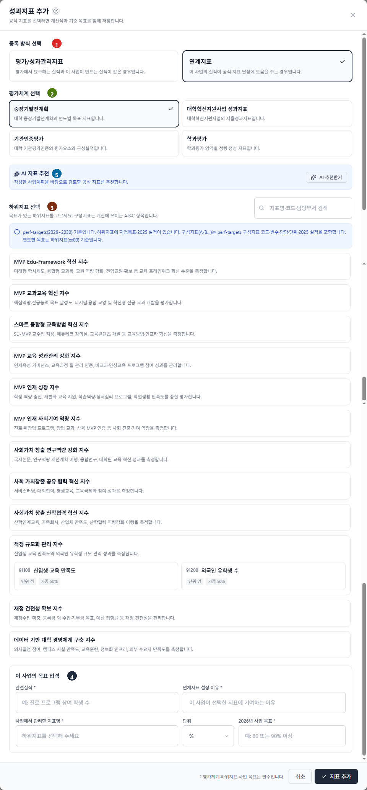
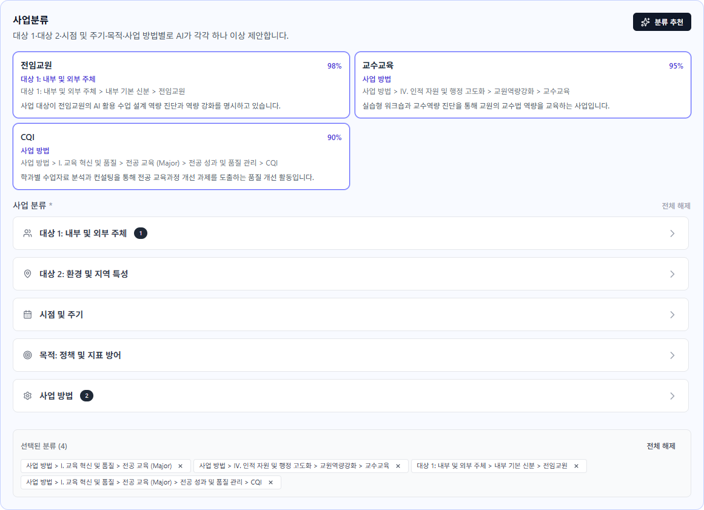
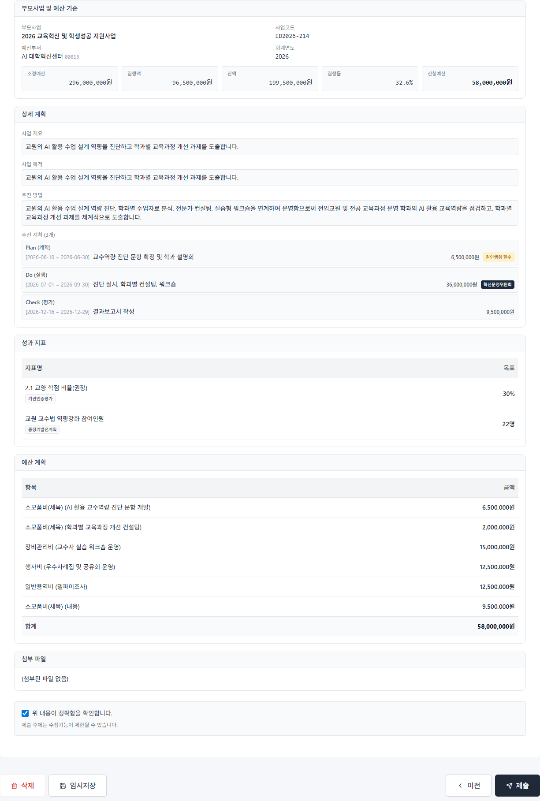
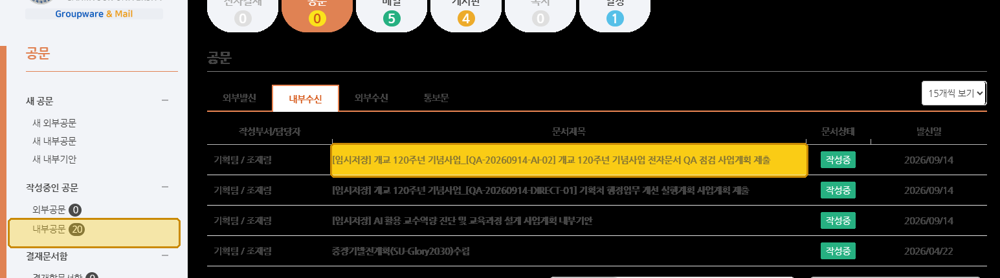

사업담당자를 위한
AION 사업계획 작성 가이드
접속 주소
전체 순서 한눈에 보기
사업담당자가 하는 일을 큰 그림으로 보면 아래 5단계입니다.
처음이면 AI 위자드, 빈 화면부터면 직접 작성, 작년 사업을 가져오려면 불러오기를 고릅니다.
1. 로그인하기
처음에는 AION 비밀번호가 없습니다. 과 같이 비밀번호를 먼저 설정한 뒤에만 로그인할 수 있습니다.
비밀번호를 설정한 뒤 로그인
- 주소창에
https://suai.cloud또는 대시보드 주소를 엽니다. - 먼저 아래 에서 새 비밀번호를 만듭니다. (첫 접속이든, 비밀번호를 잊었든 같은 절차입니다.)
- 로그인 화면으로 돌아와 사번과 방금 만든 비밀번호를 입력합니다.
- 파란 로그인 버튼을 누릅니다.

1-1. 비밀번호 설정하기
첫 로그인이든, 비밀번호를 잊었든 같은 화면입니다. 로그인 화면의 비밀번호를 잊으셨나요?에서 사번과 이메일을 넣으면, SU-WINGS 인사정보에 등록된 메일로 설정 링크가 갑니다.
설정 5단계 (로그인 전에 반드시 진행)
- AION 로그인 화면에서 비밀번호를 잊으셨나요?를 누릅니다.
- 사번과 이메일을 넣고 재설정 링크 보내기를 누릅니다.
- 메일(
no-reply@suai.cloud)에서 비밀번호 재설정하기를 누릅니다. - 새 비밀번호를 8자 이상으로 설정합니다.
- AION으로 돌아가 사번과 새 비밀번호로 로그인합니다. (위 1. 로그인)
한 번에 보는 로그인. 화면을 연다 → 비밀번호를 잊으셨나요?로 새 비밀번호를 만든다 → 사번과 그 비밀번호로 들어간다.
그룹웨어 비밀번호는 쓰지 않습니다. 아래 세 화면을 순서대로 하면 됩니다.
① 사번·이메일로 링크 받기

- 로그인 화면에서 비밀번호를 잊으셨나요?를 눌러 여기로 옵니다.
- 사번과 SU-WINGS 인사정보에 있는 이메일을 넣습니다.
- 재설정 링크 보내기를 누릅니다.
② 메일에서 설정 화면 열기

no-reply@suai.cloud메일을 엽니다.- 파란 비밀번호 재설정하기를 누릅니다.
- 링크는 제한 시간 안에 한 번만 쓸 수 있습니다.
③ 새 비밀번호를 만들고 로그인

- 새 비밀번호를 8자 이상으로 두 칸에 같게 넣습니다.
- 저장한 뒤 AION 로그인 화면으로 돌아갑니다.
- 사번과 방금 만든 비밀번호를 넣고 로그인을 누릅니다.
2. 새 사업 시작하기
로그인 후 바로 사업관리에서 새 사업을 누릅니다.
사업관리 → 새 사업
- 왼쪽(또는 하단) 메뉴에서 사업관리를 누릅니다.
- 사업 목록 화면에서 새 사업 버튼을 누릅니다.
- 이미 쓰다 만 계획이 있으면 작성 중인 사업계획 목록에서 이어서 열 수 있습니다.
3. 작성 방식 고르기 (가장 먼저 결정하는 화면)
새 사업을 누르면 세 가지 카드가 나옵니다. 하나만 고르면 됩니다. 처음이거나 초안이 비어 있으면 AI 사업기획 위자드를 추천합니다.

| 카드(버튼) | 언제 쓰나요? | 누르면 어떻게 되나요? |
|---|---|---|
| AI 사업기획 위자드 | 사업 내용이 아직 정리되지 않았을 때. 초안이 필요할 때. | AI와 대화하며 분류·부모사업·사업명·조건·예산·목적까지 채운 뒤, 5단계 편집 화면으로 넘깁니다. |
| 직접 작성 | 이미 사업계획 문구·예산·KPI가 정리되어 있을 때. | 바로 5단계 양식(기본정보~검토제출)으로 들어갑니다. |
| 기존 사업 불러오기 | 작년/유사 사업을 복사해 고칠 때. 연차사업에 유리. | 과거 사업을 골라 복사본을 만든 뒤 수정합니다. |
4. AI 사업기획 위자드 들어가기
AI 사업기획 위자드 카드를 누르면 바로 아래 화면이 열립니다.

4-1. 위자드 단계 — 부모사업부터 목적까지
위자드에 들어오면 부모사업 → 사업명 → 조건 → 예산 → 목적 → AI생성 → 편집 순서로 갑니다. 분류는 맨 마지막입니다.
부모사업 선택
부모사업은 SU-WINGS에 있는 예산 사업입니다. AION에서 만드는 실행 사업(자녀사업)은 부모사업 하나에 연결됩니다.

- 목록·검색에서 SU-WINGS 예산사업을 고릅니다.
1. AI와 사업성격파악하기
전년도 부모사업의 사업결과보고서 및 각종자료를 토대로 사용자와의 대화를 통해 지금 계획하는 사업의 내용을 명확화 하는 작업입니다.

- 부모사업을 기준으로 전년도 IR시스템의 결과보고서를 자동으로 연동합니다. 만일 작성한 결과보고서가 없다면 결과보고서 없이 진행으로 진행할 수 있습니다.
- 사업의 성격을 명확히 할 수 있는 자료들을 올려 AI위자드가 지금 계획하는 사업의 성격을 명확히 할 수 있도록 합니다.
- AI가 올려놓은 자료를 기반으로 사업의 방향을 아래와 같이 정리합니다. 내용이 명확하지 않거나 AI가 확인이 필요하다고 한 부분을 개선을 눌러 사업의 성격을 명확히 해 주세요.

- 개선 내용 입력과 AI 입력을 통해 담당자가 계획하는 사업 방향을 설정한 내용을 확인한 후 이방향으로 확정하면, 해당 방향에 따라 앞으로 계획을 AI 위자드가 반영합니다.

사업명 결정
사업의 방향에 맞는 자녀사업의 사업명을 AI가 제안하며, 사용자가 직접 사업명을 입력할 수도 있습니다.

사업 조건 설정
사업명 설정이 끝나면, 회색 박스 안에서 재원·부서·기간·원인행위·대상을 입력합니다.
- AI가 「사업명 설정 완료 → 사업 조건을 설정해 주세요」라고 안내합니다.
- 회색 박스에서 아래 항목을 채웁니다.
- 재원 구분 * — 교비, 국고, 지자체
- 책임 부서 * — 담당 부서 (예: 대학혁신지원사업단)
- 시작일 / 종료일 * — 달력으로 기간 지정
-
지출원인행위 구분 * — 원인행위 필수 / 고정비 (의무지출)
원인행위: 500만원 이상이면 행정위원회 결의 필수, 500만원 미만 및 고정비 지출건은 내부기안 필수
- 사업 대상 * — 재학생, 교직원 등
- 입력을 마치면 요약 카드로 조건이 정리되어 보입니다. 틀리면 수정으로 다시 고칩니다.
예산 규모 선택
이 자녀사업의 총예산을 AI 제안 카드에서 고르거나 직접 입력합니다.

- AI 안내: 「총 예산 규모를 선택해 주세요.」
- AI가 제안한 보수적 · 표준 · 적극적 · 최대 카드 중 하나를 고르거나, 직접 입력으로 금액을 적습니다. 단위는 천원입니다.
- 예산편성 기준은 전년도 지출금액입니다. 전년에 실제 쓴 금액을 기준으로 총액을 정합니다.
- 지금 정한 총액은 나중에 구체적인 사업계획을 넣을 때 사업기간에 따라 세분화됩니다.
- 마지막 예산안 작성 단계에서 구체적인 예산 활용 내용과 산출내역을 적습니다.
사업목적 작성하기
AI가 현재까지 계획의 방향에 따라 사업의 목적을 작성합니다. 사용자가 직접 입력하거나 AI가 제안하는 목적을 수정하여 입력할 수도 있습니다.

자녀사업 기본정보를 모두 입력했습니다. 사업계획 초안 생성을 눌러 기본정보를 활용해 사업계획의 초안을 작성합니다. 앞으로 기본정보에 따라 상세 계획을 작성하게 됩니다.

기본정보 확인 및 수정
AI 위자드와 함께 작성한 사업의 기본 정보를 검토하고 필요시 수정하는 탭입니다. 예산 확인 시 해당 사업에서 「수입」이 발생한다면 반드시 수입 있음에 체크하고 예상 수입을 입력해 주시기 바랍니다.

5. 상세 계획 · 추진계획(PDC) 작성
Step2(상세 계획)에서는 먼저 개요·목적·추진 방법을 채우고, 이어서 추진 계획을 PDC로 구체화합니다.
개요 · 목적 · 추진 방법

| 항목 | 쓰는 요령 | 예시 방향 |
|---|---|---|
| 사업 개요 * | 누가·무엇을·언제·어떻게 하는 사업인지 전체 그림. 2~4문단. 추진 배경·필요성도 여기에 함께 씁니다. |
대상·기간·부서·부모사업 연계 + 왜 필요한지 |
| 사업 목적 * | 이 사업으로 달성하려는 상태. “왜”가 아니라 “무엇을 이룰지”. | “~위험을 예방하고 ~체계를 전환한다” |
| 추진 방법 * | 어떻게 실행할지(방식·절차·협업). AI가 비워 둔 경우가 많음 → 직접 작성. | 교육·홍보·운영·점검 등 실행 절차 |
세부추진계획, 예산계획 2단계
PDC로 사업계획 세분화하기
사업의 내용을 순서에 따라 계획합니다. 지금 작성하는 것은 초안이며, 추후 변경사항을 반영하여 수정할 수 있습니다. P는 원인행위, C는 사업결과보고서 작성으로 고정되어 있고, D에 부서의 자세한 사업 계획을 작성합니다.
핵심 — P · D · C 작성 규칙
P 원인행위
사업의 시점으로 「원인행위」를 둡니다. 예산규모 500만원 이상이면 행정위원회 결의 필수, 500만원 미만 또는 고정비 사업은 내부기안 필수입니다.
D 실행
사업내용 전반에서 이루어지는 업무를 시계열에 작성합니다.
C 결과보고
사업의 종료시점으로, 사업종료 후 2주 이내 사업결과보고서를 작성한 뒤 내부기안합니다. 이후 사업예산 집행이 불가합니다.
금액 작성방법
「금액」은 위자드 예산 규모 선택에서 잡아 둔 총예산을, 추진 계획(PDC)에서 어디에 얼마를 쓸지 나누는 2단계 예산활용편성입니다. P · D · C 각각 얼마를 사용할지를 넣습니다. 단위는 천원입니다.
기대효과 · 대학발전계획 연계 · 첨부 파일
추진계획(PDC) 아래에는 기대효과, 대학발전계획 연계, 첨부 파일이 이어집니다.

기대효과 *
사업이 끝나면 어떤 변화가 생기는지를 적습니다. 화면의 발전계획 기여 요인에 작성합니다.
| 항목 | 쓰는 요령 | 예시 |
|---|---|---|
| 발전계획 기여 요인 | 본 사업이 연계되어 있는 발전계획(대학발전계획 연계 참고)을 보고, 이 사업이 해당 발전계획에 어떤 기여를 할 수 있을지 작성합니다. |
· 유학생이 국내 마약류 관련 법규와 위험성을 명확히 이해하여 안전한 대학생활 기반이 강화된다. · 입학팀 중심의 예방교육 운영 데이터가 축적되어 유학생 관리체계의 선제적 대응 역량이 향상된다. · 삼육대학교의 건강한 공동체 고유 가치에 부합하는 캠퍼스 안전문화가 확산된다. |
대학발전계획 연계
첨부 파일
사업과 관련된 계약서, 연구 등에 대한 자료를 첨부합니다. (드래그 또는 파일 선택)
Step2를 마치면 다음 >로 Step 3(성과 지표)로 이동합니다.
6. Step 3 — 성과 지표(KPI) 설정
Step 3에서는 사업이 끝난 뒤 Check(평가)에서 달성 여부를 확인할 목표를 정합니다. 본문은 정량 지표 카드 목록이고, 추가·수정은 성과지표 수정 창에서 합니다. 창에서 등록 방식을 두 가지 중 하나로 고릅니다.
| 등록 방식 | 언제 쓰나 | 창에서 하는 일 |
|---|---|---|
| 평가/성과관리지표 | 평가 체계가 원하는 실적과 같은 실적을 이 사업이 만드는 경우 | 지수 종류 → 하위지표 → 구성지표 선택. 이 사업이 낼 실적명·목표값을 직접 입력 |
| 연계지표 | 직접 원하는 실적은 아니지만 사업이 그 지표에 영향을 주는 경우 | 지수 종류 → 하위지표 선택. 관련실적·설정이유·목표 직접 입력 |
본문 — 정량 지표 목록
사업의 실적은 우리학교에서 관리하고 있는 성과지표들 (중장기발전계획서 성과지수, 대학혁신지원사업 성과지표, 대학기관평가인증 등)과 직접적으로 연계되거나, 이 지표의 향상을 지지해줄 수 있는 지표로 나누어 관리됩니다.
성과지표 수정 창 — 평가/성과관리지표
이 사업 실적이 평가체계 지표의 산출식에 들어가는 실적이면 「평가/성과관리지표」를 고릅니다. 아래 번호 순서대로 평가체계 · 하위지표 · 이 사업 목표를 입력합니다.

- 1등록 방식 선택. 「평가/성과관리지표」는 이 사업의 실적이, 평가체계에서 정한 지표의 산출식에 포함되는 실적일 때 고릅니다.
- 2평가체계 선택. 이 사업 실적이 속하는 평가체계를 고릅니다.
- 3하위지표 선택. 이 사업 실적이 들어 있는 하위지표를 고릅니다. 고르면 지표의 성격, 산출식, 구성 실적값이 표시됩니다.
- 4이 사업의 목표 입력. 3번의 실적값에 이 사업 실적이 포함되면, 「사업 성과지표명」에 그 실적 내용(예: 미래형 학사제도 중 연계전공 참여 학생 수)을 적고, 단위와 목표값을 입력합니다.
성과지표 수정 창 — 연계지표
이 사업 실적이 평가체계가 쓰는 직접 실적은 아니지만, 그 실적을 간접적으로 돕는 경우 「연계지표」를 고릅니다. 아래 번호 순서대로 평가체계 · 하위지표 · 이 사업 목표를 입력하고, AI 추천도 확인할 수 있습니다.

- 1등록 방식 선택. 이 사업 실적이 평가체계에서 쓰는 직접 실적이 아닐 때, 평가체계 실적을 간접적으로 서포트하는 실적으로 등록하는 것이 연계지표입니다.
- 2평가체계 선택. 1의 설명에 따라 해당하는 평가체계 종류를 고릅니다.
- 3하위지표 선택. 평가체계에 따른 하위지표를 고르면 관련 실적의 성격이 보입니다. 그 성격과 이 사업 실적을 비교해 고릅니다.
- 4이 사업의 목표 입력. 고른 하위지표에 맞춰 이 사업 실적을 적습니다. 해당 지표가 하위지표를 왜, 어떻게 서포트하는지 입력한 뒤, 지표명과 사업 목표를 입력합니다.
- 5AI 지표 추천. 지금까지 작성한 계획을 바탕으로 AI가 추천합니다. 제안을 확인한 뒤 선택할 수 있습니다.
7. Step 4 — 예산 소요 계획 (P/D/C 계정과목 편성)
예전에 SU-WINGS에서 따로 작성하던 예산서를 이제 이 화면에서 사업계획과 함께 작성합니다. 2단계에서 나눈 P 계획 / D 계획 / C 계획 금액에 맞춰, Plan 표와 Do 표와 Check 표에 계정과목 · 예산신청내용 · 산출근거 · 신청예산(천원)을 각각 적습니다.
예산이 내려오는 순서
P합+D합+C합 = 총예산
편성 = 각 계획
SU-WINGS
한 행에 넣을 것
| 번호 · 열 | 작성 요령 |
|---|---|
| 1계정과목 | 드롭다운에서 선택. 예: 교원각종수당, 소모품비, 시설비, 스마트 그린공간 조성 등 |
| 2예산신청내용 | 무엇을 위해 쓰는지 한 줄로. 예: 「벤치, 테이블, 파라솔 등 체류형 편의시설 설치」 |
| 3산출근거 | 단가 × 수량 × 횟수처럼 계산식이 보이게. 비워 두지 않는 것이 좋습니다 |
| 4신청예산 (천원) | 원 단위가 아니라 천원. 50,000원이면 50이라고 입력해주세요 |
 1
2
3
4
1
2
3
4
8. 사업분류
사업분류는 “이 사업이 누구를 위해, 어떤 환경에서, 언제, 무슨 목적으로, 어떤 방법으로 하는가”를 대학 공통 코드(C1~C5)로 찍는 작업입니다. 분류 추천을 누르면 AI가 지금까지 쓴 글을 읽고 초안 도출하오니, 검토 후 수정해주시기 바랍니다.

조작 방법 (클릭 순서)
위쪽 C1 ~ C5 아이콘 중 하나를 누른다
아이콘을 누르면 그 분류의 하위 목록이 아래에 펼쳐집니다. 밑줄이 생긴 아이콘이 현재 보고 있는 분류입니다.
- C1 (사람 아이콘) — 대상 1: 내부 및 외부 주체
- C2 (위치 아이콘) — 대상 2: 환경 및 지역 특성
- C3 (달력 아이콘) — 시점 및 주기
- C4 (과녁 아이콘) — 목적: 정책 및 지표 방어
- C5 (톱니 아이콘) — 사업 방법
조작 02 ~ 05
하위 항목을 엽니다
여러 개 고릅니다
같은 방식으로
전체 해제
C1 ~ C5가 각각 무엇인지
| 코드 | 이름 | 질문으로 이해하기 | 주요 하위 항목(예시) |
|---|---|---|---|
| C1 | 대상 1: 내부 및 외부 주체 | 이 사업의 사람(대상)은 누구인가? |
· 내부 기본 신분: 외국인, 신입생, 재학생, 휴학생, 졸업생(미취업), 전임/비전임교원, 강사, 조교, 직원(정규·계약), 외부인 · 학년/과정: 1~4학년, 초과학기, 석·박사, 한국어연수 · 외부 협력 주체: 산업체, 지자체, 교회/교단, 타 대학, 정부부처, 지역사회기관 등 |
| C2 | 대상 2: 환경 및 지역 특성 | 대상이 놓인 환경·지역·상황은? |
· 거주 환경: 기숙사(에덴관·시온관 등), 지역(서울·구리·남양주·경기·지방) · 행정적 특성: SDA 교인, 학사경고자, 미적응자, 리더학생, 가계곤란자, 장애학생, 금연/금주 희망자 등 |
| C3 | 시점 및 주기 | 언제, 얼마나 자주 하는 사업인가? |
· 학사 타임라인: 학기 전 / 학기 초 / 학기 중 / 학기 말 / 방학 중 · 사업 주기: 매일, 매주, 매월, 학기별, 상시, 단회 |
| C4 | 목적: 정책 및 지표 방어 | 이 사업이 지키는·올리는 대학 정책·성과지표는? |
· 대학 정체성: 교인 학생 관리, 선교, ESG, 금연·금주, 인성교육(SU-MVP+) 등 · 국제화 인증(IES): 유학생 체류·중도탈락·TOPIK·의무교육 등 · 학생충원: 재학생 충원율, 신입 충원율, 기숙사 수용률 등 · 교육 및 취업: 취업률, 장학, 교육비 환원, 도서관 인프라 등 |
| C5 | 사업 방법 | 실제로 어떤 수단·프로그램 유형으로 하는가? |
· I. 교육 혁신 및 품질 (전공교육, 교과목 개발·운영 등) · II. 학생 성취 및 성장 · III. 연구 및 산학 협력 · IV. 행정 자원 및 인프라 고도화 (하위는 더 세부적인 방법 코드로 이어집니다) |
9. Step 5 — 검토하고 제출하기
지금까지 작성한 계획서를 AI를 활용하여 검토하고, 공문으로 담당부서에 보냅니다.

제출 전 체크리스트
- 요약된 사업명·기간·부서·담당자가 맞는지 확인합니다.
- (권장) 분석 실행을 눌러 AI 완성도 진단을 봅니다. 점수가 낮으면 이전 Step으로 돌아가 보완합니다.
- 상세계획·성과지표·예산 요약도 스크롤하며 확인합니다.
- 문제가 없으면 화면의 제출 버튼(검토 완료 후 제출)을 누릅니다.

10. 제출 직후 — 내부기안 작성으로 이어가기
작성한 사업계획서를 내부기안으로 올립니다. 결재라인과 본문을 확인한 뒤 결재하면 그룹웨어 임시저장 폴더에 들어갑니다.

- 신청에 추가를 눌러서 결재라인을 지정합니다.
- 근거 및 본문에 관련 근거가 아래 본문 내용 외에 더 있다면 추가해주세요.
- 제목과 본문은 자동으로 생성됩니다. 검토 후 수정하여 활용하시기 바랍니다.
- 지금까지 작성한 사업계획서는 「바. 사업계획서: 바로가기」 버튼을 통해 결재자가 확인할 수 있습니다. 따라서 따로 첨부할 필요는 없습니다.
- 공문부서: 공문부서를 사업부서와 일치시켜주세요.
-
(중요) 결재 버튼을 누르면, 그룹웨어(gw.syu.ac.kr)의 임시저장 폴더에 저장됩니다.
GW에서 공문명을 눌러 AION에서 작성한 사업계획이 잘 저장되었는지 확인합니다.

그림 22. 그룹웨어 임시저장 — 작성중인 공문 · 내부공문 - (중요) 내부공문발송: 확인이 완료되었으면 제출 버튼을 눌러 사업계획서를 제출합니다.
사업계획 검토 및 예산조정 절차 안내
사업계획 작성 및 검토, 예산조정과 관련한 행정절차는 아래와 같습니다.
절차 01 ~ 04
10/14(수)까지
실수 줄이는 실무 팁
- 자주 임시저장 — 긴 문장은 중간에 저장하세요.
- 부모사업 먼저 — 예산 연결 없이 본문만 쓰면 나중에 다시 맞추느라 시간이 듭니다.
- AI는 초안 — 사업명·KPI·예산·본문은 담당자가 최종 확인합니다.
- 제출 ≠ 승인 — 제출 후 반드시 내부기안 결재까지 가세요.
- 숫자 일치 — Step2 P+D+C = 총예산, Step4 P편성=P계획·D편성=D계획·C편성=C계획, 자녀 합계 = 부모사업 예산. 단위는 천원.
자주 묻는 질문
Q. 처음에도 비밀번호를 먼저 만들어야 하나요?
네. 처음 접속이든 비밀번호를 잊었든 같습니다. 로그인 화면에서 비밀번호를 잊으셨나요? → 사번·이메일을 넣고 링크를 받습니다. 메일의 비밀번호 재설정하기로 새 비밀번호(8자 이상)를 설정한 뒤 로그인하세요. 이메일은 SU-WINGS 인사정보에 등록된 주소여야 합니다. 자세한 화면은 1-1. 비밀번호 설정을 보세요.
Q. 임시저장만 했는데 사업이 승인되나요?
아니요. 제출하고 내부기안 결재 승인까지 받아야 합니다.
Q. 부모사업을 꼭 연결해야 하나요?
예산·집행을 사업과 같이 보려면 연결하는 것이 맞습니다. SU-WINGS 예산사업을 부모로 둡니다. 자녀 사업들의 총액 합이 부모사업 예산 안에서 맞아야 합니다.
Q. 예산은 어디에 얼마를 넣나요?
자녀 총예산 → 2단계에서 P·D에만 금액(합계=총예산) → 4단계에서 P표·D표로 계정과목 쪼개기(각 표 합계=그 단계 계획액). C·A는 금액이 없습니다. 단위는 천원입니다.
Q. AI가 써 준 내용을 그대로 내도 되나요?
초안용입니다. 사실관계·예산·일정·성과지표는 담당자가 수정·확정해야 합니다.
Q. 직접 작성과 AI 위자드 중 무엇을 고르나요?
초안이 없으면 AI 위자드, 이미 문서가 있으면 직접 작성, 작년 사업 재사용이면 기존 불러오기.
Q. 지출청구도 AION에서 끝나나요?
아닙니다. AION은 사업 맥락·문서 연결·증빙 관리 중심이고, 실제 예산·청구는 SU-WINGS/그룹웨어 흐름을 따릅니다.
* 예산 신청에 따른 지출청구 기능 확대 예정
한 장 요약 — 사업담당자 체크리스트
- 1-1로 비밀번호를 설정한 뒤 로그인한다
- 사업관리 → 새 사업을 연다
- 작성 방식을 고른다 (보통 AI 위자드)
- 내용은 다 쓴 뒤, 마지막에 사업분류(C1~C5) AI 초안을 수정·확정한다
- 부모사업(예산)을 연결한다
- 기본정보·상세계획·KPI·예산을 채운다 (총액 → P/D/C 금액 → 계정과목, 숫자 일치)
- 자주 임시저장한다
- Step5에서 검토·(가능하면) AI 분석 후 제출한다
- 내부기안 작성을 눌러 결재를 올린다
- 승인될 때까지 사업 상세 상태를 확인한다